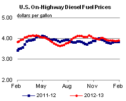
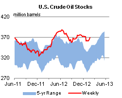

Released: January 30, 2013
Next Release: February 6, 2013
Export Demand Supports U.S. Distillate Markets
Diesel fuel prices have generally declined since October as a result of narrowing distillate crack spreads (Figure 1). On January 28, the average U.S. price for on-highway retail diesel fuel was $3.93 per gallon, 22 cents per gallon lower than its 2012 peak of $4.15 per gallon, reached on October 15. This price decline is similar to that of gasoline prices, which were discussed in last week's edition of This Week in Petroleum. However, unlike gasoline prices, diesel prices during the first month of 2013 have been higher than year-ago levels; this reflects growing global distillate demand, which has spurred increased refinery runs in the United States to increase distillate production for export.
{kind=link}
After falling from a September 2012 average of $112.86 per barrel to an average of $109.49 per barrel in December 2012, a decline that contributed to the fall in diesel prices in late 2012, Brent spot prices rebounded in January 2013 to average $112.69 per barrel through January 29. However, diesel crack spreads (measured as the difference between the ultra-low-sulfur diesel (ULSD) spot price and the Brent crude oil spot price) have narrowed since October. Diesel crack spreads in Chicago are down 30 cents per gallon since October. Diesel crack spreads in New York, the Gulf Coast, and Los Angeles have averaged between 14 and 16 cents per gallon lower in January than they did in October.
Despite declining diesel prices since autumn, the demand for diesel produced in the United States remains healthy as a result of imbalances in Latin America, where diesel demand exceeds local production. International demand has helped keep diesel crack spreads in the United States higher than year-ago levels, notwithstanding lower year-over-year domestic distillate (a broader product category that includes diesel) consumption. The International Energy Agency estimates that global distillate consumption increased in 2012 compared to 2011, driven by consumption increases in emerging economies. Similar to the situation in the United States, distillate consumption among the developed economies of the Organization for Economic Cooperation and Development as a whole was down year-over-year in 2012.
U.S. refiners have increased production, encouraged by diesel crack spreads that remain attractive, notwithstanding the recent decline noted above. For the four weeks ending January 25, U.S. average gross refinery inputs totaled 15.0 million bbl/d, a 1.7-percent increase from the same period a year ago. The increase in runs has resulted in increased production of all fuels, including gasoline and diesel.
With the strong demand abroad, U.S. refiners have exported their additional distillate production. Through October 2012 (the most recent data for exports), the United States had exported 1.0 million bbl/d of distillate fuel, compared with just over 0.8 million bbl/d during the same period in 2011, a 22-percent increase. Most of these exports came from refineries on the Gulf Coast and were shipped to Latin America. However, increasing volumes of distillate fuel were also exported from the East Coast, which exported 143,000 bbl/d of distillate through the first 10 months of 2012, a 21-percent increase from 2011. The incentive to export in the absence of domestic demand has helped keep inventories below their five-year averages for most of the past year (Figure 2).
{kind=link}
EIA forecasts retail diesel prices to continue decreasing through 2013. This decrease is expected to be driven by lower Brent crude oil prices, as EIA expects distillate crack spreads to remain fairly stable through most of 2013. EIA forecasts U.S. average on-highway retail diesel prices will stay near current levels in the coming weeks to average $3.93 per gallon in February, before falling modestly through the rest of the year, reaching the neighborhood of $3.80 per gallon at year end. Needless to say, the value of futures and options contracts demonstrate the significant uncertainty in any forecast of prices.
Gasoline and diesel fuel prices both increase again
The U.S. average retail price of regular gasoline increased four cents to $3.36 per gallon, down eight cents from last year at this time. Prices increased in all regions of the nation, but are all lower than year-ago levels. The largest increase came in the Rocky Mountain region, where the price increased 10 cents to $2.98 per gallon, remaining the only region below $3 per gallon for the fourth consecutive week. The Midwest price increased seven cents to $3.29 per gallon, and the West Coast price is up four cents to $3.55 per gallon. On the East Coast, the price is now $3.45 per gallon, an increase of three cents from last week, and the Gulf Coast price is up a penny to $3.16 per gallon.
The national average diesel fuel price increased three cents to $3.93 per gallon, eight cents higher than last year at this time. Prices increased in all regions of the nation, and are higher than year-ago prices in all regions except the Rocky Mountains, where the price is eight cents lower than last year at this time. The largest increase came in the Rocky Mountains, where the price increased six cents to $3.74 per gallon. The West Coast price increased a nickel to $4.05 per gallon. The East Coast and Midwest prices are both up two cents, to $4.02 per gallon and $3.87 per gallon, respectively. The Gulf Coast price is now $3.85 per gallon, up one cent from last week.
Propane inventories decline
U.S. propane stocks fell 3.5 million barrels to end at 57.4 million barrels last week, 8.4 million barrels (17 percent) higher than a year ago. Midwest regional inventories dropped by 1.7 million barrels, while Gulf Coast inventories declined by 1.0 million barrels. East Coast stocks dropped by 0.5 million barrels, and stocks in the Rocky Mountain/West Coast region declined by 0.3 million barrels. Propylene non-fuel-use inventories represented 5.2 percent of total propane inventories.
Residential heating fuel prices rise
Residential heating oil prices increased during the period ending January 28, 2013. The average residential heating oil price increased by 3 cents to $4.01 per gallon, 6 cents per gallon higher than the same time last year. Wholesale heating oil prices increased by nearly 2 cents to just under $3.20 per gallon, 3 cents per gallon higher than last year at this time.
The average residential propane price rose by 2 cents to just over $2.47 per gallon, 39 cents per gallon lower than the same period last year. Wholesale propane prices increased by 5 cents to nearly $0.98 per gallon for the week ending January 28, 2013, 25 cents per gallon lower than the January 30, 2012 price.
|  | |||||||
| Retail Data | Change From Last | Retail Data | Change From Last | ||||
| 01/28/13 | Week | Year | 01/28/13 | Week | Year | ||
| Gasoline | 3.357 | Heating Oil | 4.013 | ||||
| Diesel Fuel | 3.927 | Propane | 2.474 | ||||
|
|||||||||||||||||||||||||||
| *Note: Crude Oil Price in Dollars per Barrel. | |||||||||||||||||||||||||||
|  | |||||||
| Stocks Data | Change From Last | Stocks Data | Change From Last | ||||
| 01/25/13 | Week | Year | 01/25/13 | Week | Year | ||
| Crude Oil | 369.1 | Distillate | 130.6 | ||||
| Gasoline | 232.3 | Propane | 57.433 | ||||